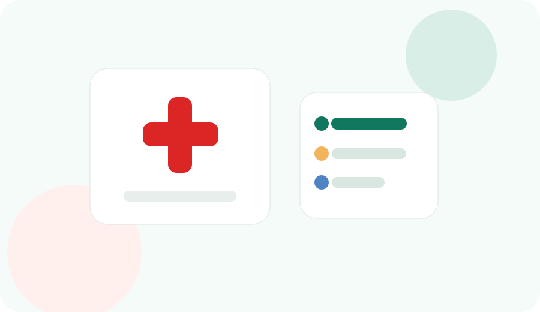

After School Clinic
하교 후 소아과는 “갈 수 있는 병원”보다 “접수 마감 전에 도착 가능한 병원”이 먼저입니다.
아이가 학교나 학원에서 갑자기 열이 나거나 기침, 복통, 두통을 말하면 부모는 가까운 소아과부터 검색하게 됩니다. 하지만 하교 후 시간대에는 병원 접수 마감, 대기 인원, 주차, 약국 이동, 학원 일정 취소가 동시에 걸립니다.
운정에서는 생활권마다 병원과 약국 위치가 다르고, 오후 시간대에는 학원 차량과 퇴근 차량이 겹칠 수 있습니다. 그래서 “가까운 병원”보다 “전화했을 때 오늘 접수 가능하고, 약국까지 이어지는 병원”을 먼저 고르는 편이 안전합니다.
특히 아이가 처지거나 호흡이 불편하거나 탈수 의심이 있다면 일반 검색으로 시간을 쓰기보다 119, 응급의료포털, 의료기관 상담을 우선해야 합니다. 이 글은 급하지 않은 일반 진료 상황에서 방문 실패를 줄이는 생활 체크리스트입니다.

전화로 먼저 확인할 질문
| 접수 | “지금 아이 진료 접수 가능한가요? 몇 시까지 도착해야 하나요?” |
| 증상 | “발열·기침·복통 진료 가능한가요? 검사 가능 여부를 확인할 수 있나요?” |
| 대기 | “현재 대기 시간이 어느 정도인가요?” |
| 주차 | “건물 주차가 가능한가요? 만차면 어디에 세우면 좋나요?” |
| 약국 | “근처 조제 가능한 약국이 아직 운영 중인가요?” |
하교 후 동선 체크
- 학교나 학원에서 병원까지 이동 시간이 20분을 넘으면 접수 마감을 다시 확인합니다.
- 학원 결석 연락, 형제자매 픽업, 저녁 식사 일정을 병원 이동 전에 정리합니다.
- 병원 주차가 어려운 생활권은 보호자 한 명이 먼저 접수하고 다른 보호자가 주차하는 방식도 고려합니다.
- 처방 후 약국 조제 시간이 남아 있는지 확인하고, 늦은 시간에는 대체 약국을 하나 더 봅니다.
같이 보면 좋은 글
정보 확인 안내
이 글은 공식 자료, 공공데이터, 지도 검색 결과를 기준으로 정리했습니다. 운영시간, 요금, 휴무, 주차 조건은 현장 상황에 따라 바뀔 수 있으니 방문 전 다시 확인하세요.
오류나 변경된 정보가 있으면 정보 제보로 알려주세요. 자세한 작성 기준은 편집 기준, 주요 출처는 공식 출처에서 확인할 수 있습니다.